Analyze results
As last part, the post processing is the most interesting and awarding step since you actually can analyze the collected displacement data. 'DisplacementAnalysis.m' allows you to review the displacement field and to correct or delete markers which were not correlated or tracked very well. The strains can be evaluated with 'StrainAnalysis.m'. The material properties (e.g. Young's Modulus) are calculated with 'PropertyAnalysis.m'.
Displacements
To start click the button 'Analyze results' in the main gui or type into the command window 'DisplacementAnalysis;'. The following window will appear:
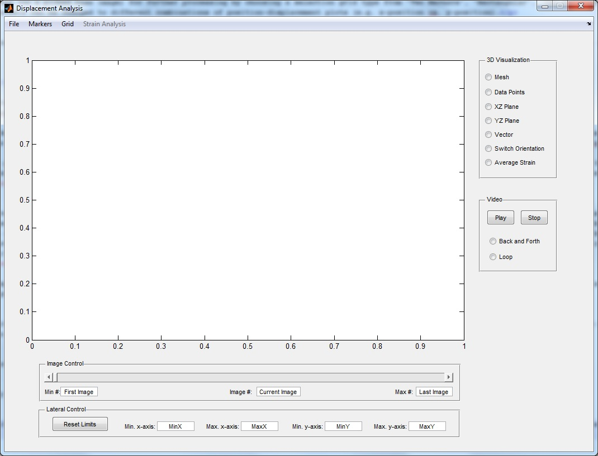
To open the files that contain the positions (coordinates) of the markers ('validx.dat' and 'validy.dat'), select 'File', 'Open Coordinates' from the main menu and select the files.
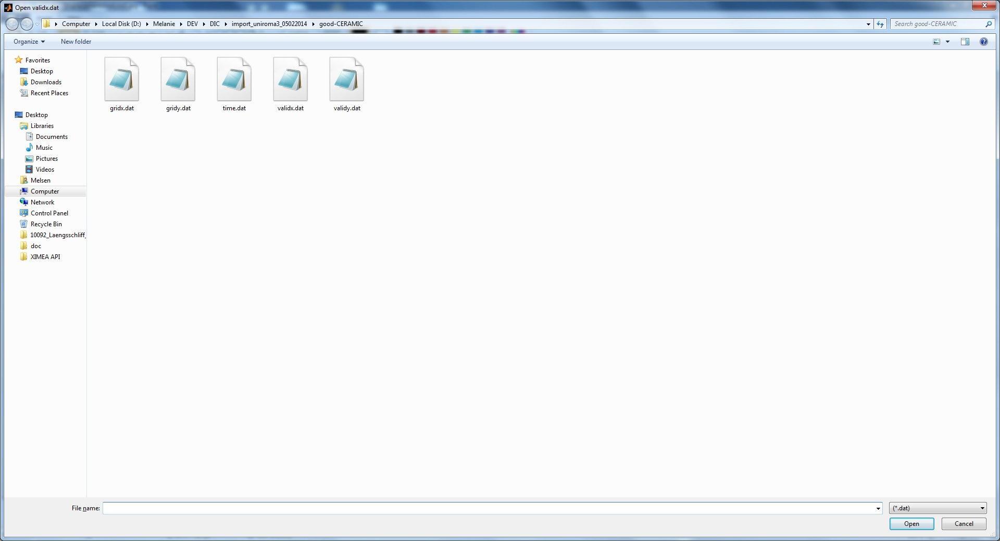
The displacement field in x-direction (z-axis) versus position (x- and y-axis) will be plotted for all images. The image number can be selected by the slider control below the figure. It has to be noted that the orientation of the displacement depends on the orientation of the image during the correlation process. The x-axis in the plot is the horizontal direction in the image and the y-direction corresponds to the perpendicular direction. The plotted displacements on the z-axis are always the x-displacement of the data. To analyze the displacement in y-direction, hit 'Switch Orientation' in the '3D Visualization' panel on the right of the figure. This will exchange the marker positions 'ValidX' and 'Valid' and now show the displacement field in y-direction on the z-axis. Hit 'Switch Orientation' again to display the displacement field in x-direction.
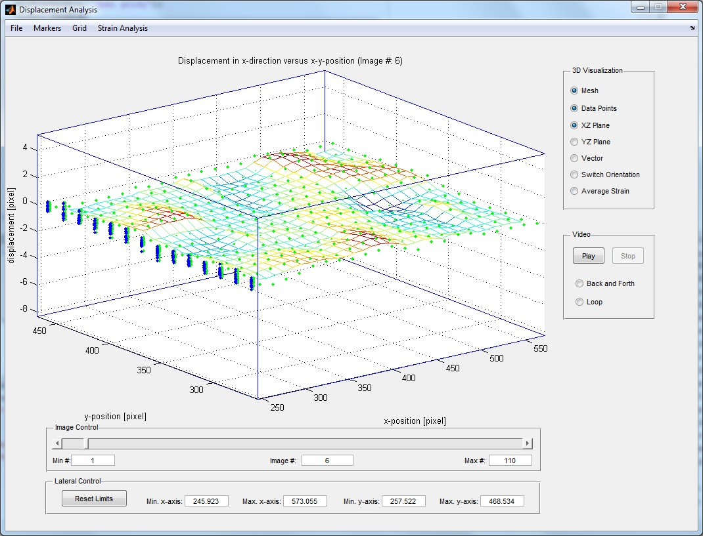
The standard deviations of the markers that quantify their uncertainty are contained in 'stdx.dat' and 'stdy.dat'. To clean markers by standard deviation or distance to fit thresholding or to calculate the principal strains, the standard deviations ('stdx.dat' and 'stdy.dat') need to be opened from the 'File' menu.
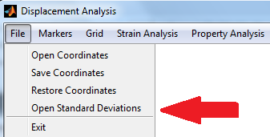
.
The 'File' main menu also allows you to save the coordinates of the marker positions to new files ('validx_corr.dat' and 'validy_corr.dat' as well as 'stdx_corr.dat' and 'stdy_corr.dat' if used) and to restore coordinates after applying modifications that will be described in the following.
From the 'Markers' main menu you can select:
- Average Images
- Select
- Clean
- Correct by Reference
- Plot
- Smooth Displacements.
Average Images
The coordinates of the marker positions ('ValidX', 'ValidY') can be averaged by either intervals (formerly find_and_mean_images) or steps (formerly validxy_mean). The averaging by intervals is performed by either taking large differences (greater than a user-given threshold) or equidistant intervals defined by the user. The x coordinate for the visualization can be the time extracted from the images ('timeimage.txt') in Generate file list or the image number. The averaging by steps is realized by averaging over a user-given step size.
Select
Sets of grid position markers can be selected (on a picked base image) for further processing by choosing a selection grid type from 'Two Markers', 'Rectangular', 'Two Rectangles of Markers', 'Circular' and 'Line'. Additionally, the view for the selection of markers can be changed to different combinations of position-displacement plots (e.g. x-position vs. y-position).
Clean
Markers have to be deleted when they were not well tracked during processing correlations or peak tracking. This might be the result of e.g. marker movement during processing, changing light conditions or insufficient characteristics on the sample surface.
There are several ways to delete markers:
- Remove badly tracked markers (point)
- Remove badly tracked markers (area)
- Remove markers from displacement vs. position plot
- Remove markers moving relative to their neighbors
- Remove markers by standard deviation thresholding
- Remove markers by distance thresholding
- Remove markers by correlation coefficient.
The first three options allow the user to delete single points or points within an area by selection. For removing single points, the marker with the highest displacement value will be marked as a red dot while the marker with the lowest displacement will be marked as a blue dot. When deleting a marker (by clicking close to it) the plot will be updated to the new displacement field including the color code.
To remove markers moving relative to their neighbors ('jumpers'), the user has to define the upper and lower limit (by two clicks) for the relative marker displacement w.r.t. the next 10 neighbors. The selection of the upper and lower limit can be repeated ('Apply and refine') until the user is satisfied with the result ('Apply') of the relative marker displacement. This helps cleaning up your data set.
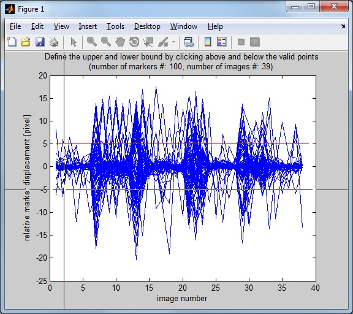
To apply cleaning by standard deviation, the standard deviation for each marker ('stdx.dat', 'stdy.dat') that has been calculated during correlation needs to be specified ('Open Standard Deviations' from 'File' menu). Then the user has to select a threshold to distinguish between outliers (data that will be removed) and remaining data (that is kept). Hitting 'Apply' will accept the changes.
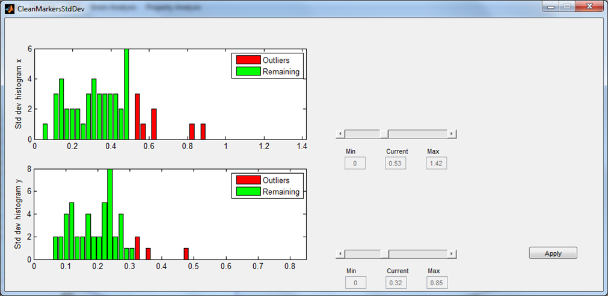
To realize cleaning by distance to a linear strain fit with error bars in both x- and y-direction, the standard deviation for each marker ('stdx.dat', 'stdy.dat') has to be opened ('Open Standard Deviations' from 'File' menu). Then the user needs to specify a threshold to distinguish between outliers (data that will be removed) and remaining data (that is kept). Hitting 'Apply' will accept the changes.
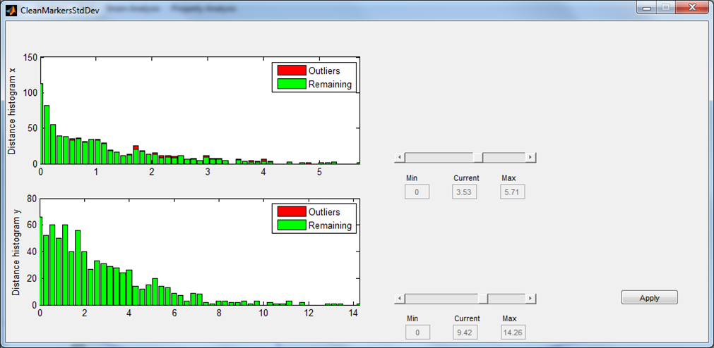
Removing markers by correlation coefficient, the correlation coefficient for each marker ('corrcoef.dat') has to be opened ('Open Correlation Coefficient' from 'File' menu). Then the user needs to specify a threshold to distinguish between outliers (data that will be removed) and remaining data (that is kept). Hitting 'Apply' will accept the changes.
Correct by Reference
The calculated marker positions can be corrected by calculations on reference grids that are placed in sample locations where no strain occurs. For the correction procedure the base image has to be selected, and the grid of markers ('gridx.dat', 'gridy.dat') that has been used for the calculation of the marker positions have to be chosen by the user. The grid that has been used for the analysis is shown in red. The reference grids in x-direction (blue, copy of analysis grid) and y-direction (green, copy of analysis grid rotated around 90°) are deduced from the analysis grid. The user can move the reference grids on the image by specifying the x- and y-displacement (w.r.t. upper left image corner, positive x moves right, positive y moves downwards). The reference grids can also be stretched (value > 1) and compressed (value < 1) by specifying a respective value. The user can refine the positioning of the reference grids ('Try again') until they are in the desired location ('Apply').
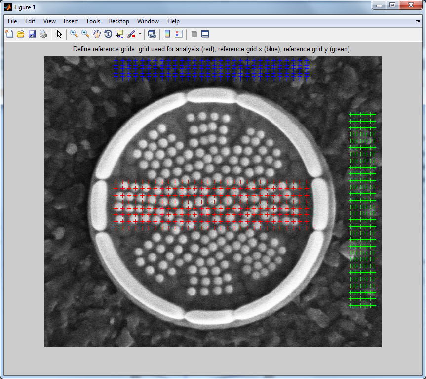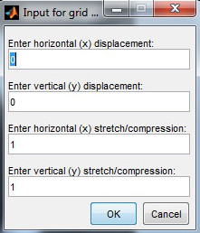
Assuming that there is no strain and no displacement of the markers w.r.t. the corresponding reference grid, the marker positions on the analysis grid are corrected with displacements from the blue reference grid (in x-direction) and with displacements from the green reference grid (in y-direction).
Plot
Plotting the marker positions on all images gives the user feedback if the markers have been successfully tracked during correlation calculation (e.g. if jumps or distortions are detected). For later evaluation the images with the plotted markers can be saved by creating a video.
Smooth Displacements
Smoothing displacements is realized for each image with 2D filter using grid relation (rows and columns).
Grid
The grid that has been used for calculating correlations can be plotted or added to the marker positions.
Plot
Plotting the grid requires the user to specify the grid of markers ('gridx.dat', 'gridy.dat'), the desired image and the corrsize used for the analysis. The grid (green) is shown in relation to the subset window size (blue) used for correlation calculation (2*corrsize+1).
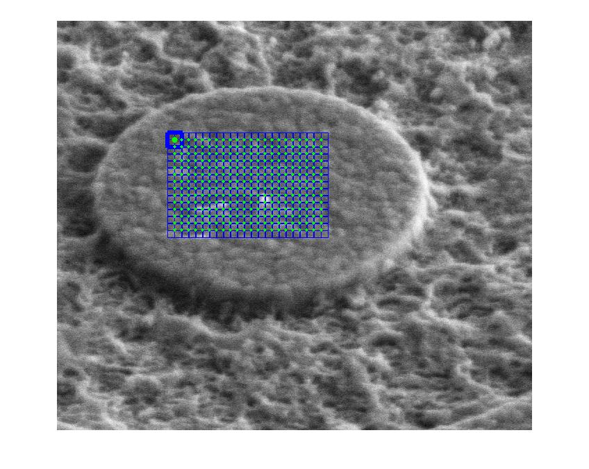
Add to Coordinates
This allows to add the grid to the marker positions (coordinates) at the location of the first image. All positions will be shifted by one image towards the end. Therefore the users needs to specify the grid of markers ('gridx.dat', 'gridy.dat'). Then the coordinates should be saved.
Strains
After cleaning up and saving the data you might want to calculate the strain. Click on 'Strain Analysis' in the main menu of 'DisplacementAnalysis.m' and the script 'StrainAnalysis.m' will be called. It takes into account the direction (x if 'Switch Orientation' is not selected, y if 'Switch Orientation' is selected). There are four options for strain analysis to choose from:
- Average strain 1D
- Average strain 1D (direction-independent)
- Local strain 1D
- Full strain 2D
- Strain between 2 points 1D
- Principal strains.
Average strain 1D
The strain in x- or y-direction is averaged over all markers. For each image, the displacement versus the position is plotted and then fitted by a linear function. The slope is the strain which is plotted versus the image number after all images are processed. For strain calculation you can choose between 'engineering strain' (w.r.t. initial marker positions) and 'true strain' (w.r.t. current marker positions). You also have to decide if you want to use a strain gage for measurement. If yes you have to specify its geometry.
 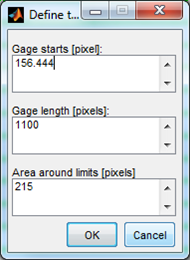
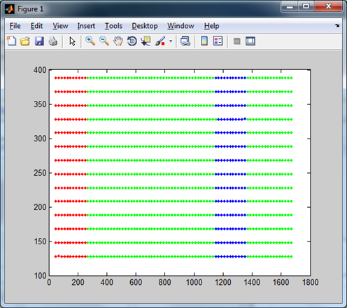
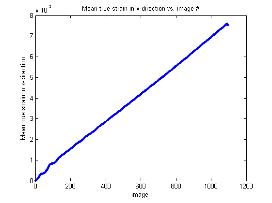
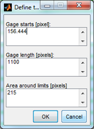
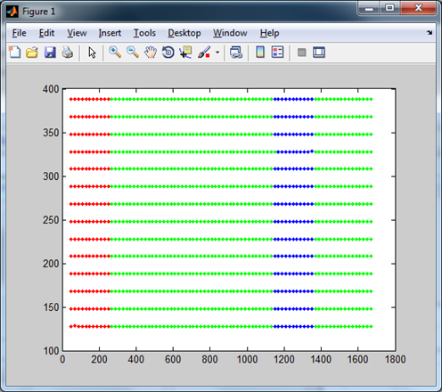
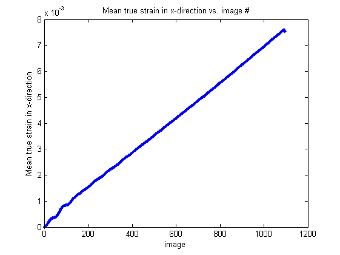
The strain data is plotted and saved in 'eulerianStrain.dat' (column 1: image number, column 2: average strain slope, column 3: average strain intercept), the strain gage data in 'gagestrain.dat' and 'gageparam.dat'. The direction-independent version is based on the displacement magnitude (x, y).
Local strain 1D
The local strain is calculated by the local gradient in x- or y-direction after the user has specified the base image, the region of interest and the number of parts in which the region of interest should be split. The local displacement gradient is plotted over the marker position.
Full strain 2D
The strain is determined by the gradient in x- or y-direction. The displacement and strain is plotted in two different figures versus the x- and y-position of the markers. The 2D strain is saved in 'strain2D.dat' for the selected direction (one column corresponds to one image, one line corresponds to one marker).
Strain between 2 points 1D
The relative difference between two points yields a 1D strain value. The user has to specify the base image with two points by clicking close to them. The true strain is plotted over the image number.
Principal strains
To calculate the principal strains (and stresses), the standard deviation for each marker ('stdx.dat', 'stdy.dat') that has been calculated during correlation needs to be specified ('Open Standard Deviations' from 'File' menu). Then the principal strains are calculated.
The material properties (Young's Modulus and Poisson's Ratio) and their standard deviations have to be given to compute the principal stresses.
The principal strains and stresses are saved to files 'strainoutput.mat' and 'stressoutput.mat'. The principal strains are calculated by linear fitting (with error bars in both x- and y-direction) to straight lines. The principal stresses are calculated by analytical formulations based on the principal strains and the material properties.
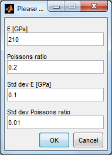
Fitting strain over depth
For strain over depth fitting, select 'Fitting' from the main menu and then 'Strain over Depth'. The script 'FitStrainOverDepth.m' is called. The user needs to provide a file obtained by 1D average strain calculation. The depth is between 0 and 1 (maximum depth).
For more details see Salvati, 2016: "Residual Stress Measurement on Shot Peened Samples Using FIB-DIC".
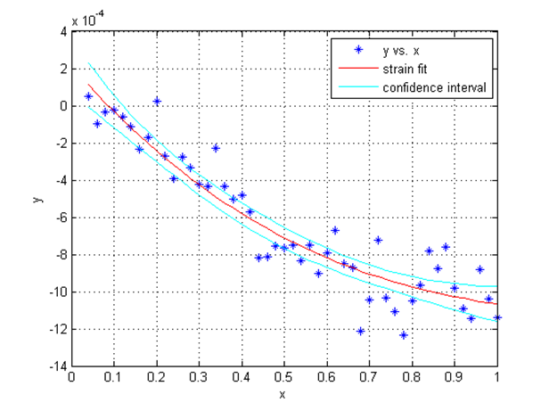
Stresses
Select 'Stress Analysis' from the main menu and then 'Calculate Stress'. The script 'CalculateStress.m' is called. The user needs to provide E and v for a homogeneous, isotropic material. The calculated stress in x, y, and xy direction is saved in 'stress.dat'. The stress file (line 1: x stress, line 2: y stress, line 3: xy stress) contains information about the direction (standardxy if 'Switch Orientation' is not selected, reversedxy if 'Switch Orientation' is selected).
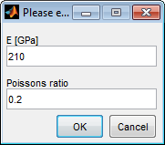
Properties
To determine material properties from a tensile test (e.g. Young's Modulus) select the material behavior type (ductile or brittle) from the main menu of 'DisplacementAnalysis.m' and either 'PropertiesAnalysisDuctile.m' or 'PropertiesAnalysisBrittle.m' is called.
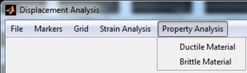
You need to specify the load file (that contains the time stamps and the current values of the load cell plus additional meta data), the sample data (width, tickness, name) and load cell data (offset, calibration factor) as well as the strain file (that contains the averaged strain that has been calculated by the function 'Average strain 1D'). The linear behavior (straight line) has to be selected from the stress strain diagram.
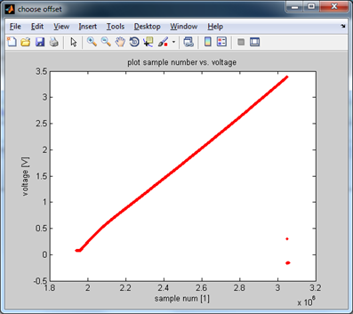
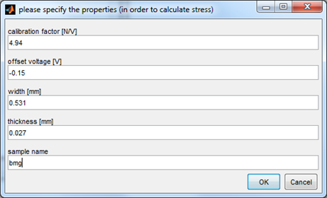
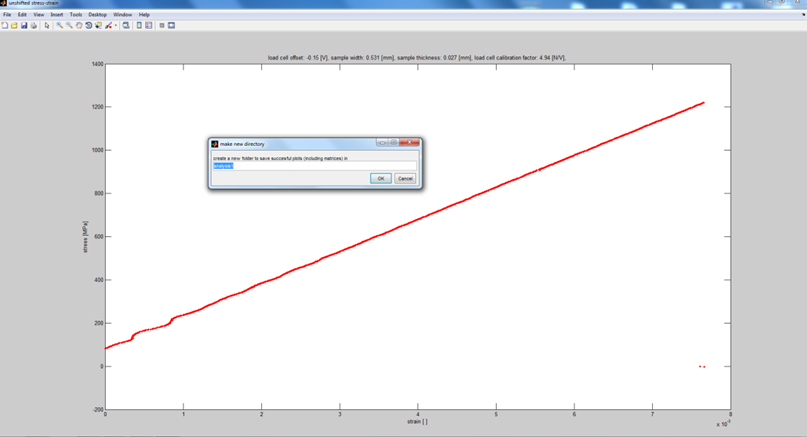
In a next step the fracture point has to be selected.
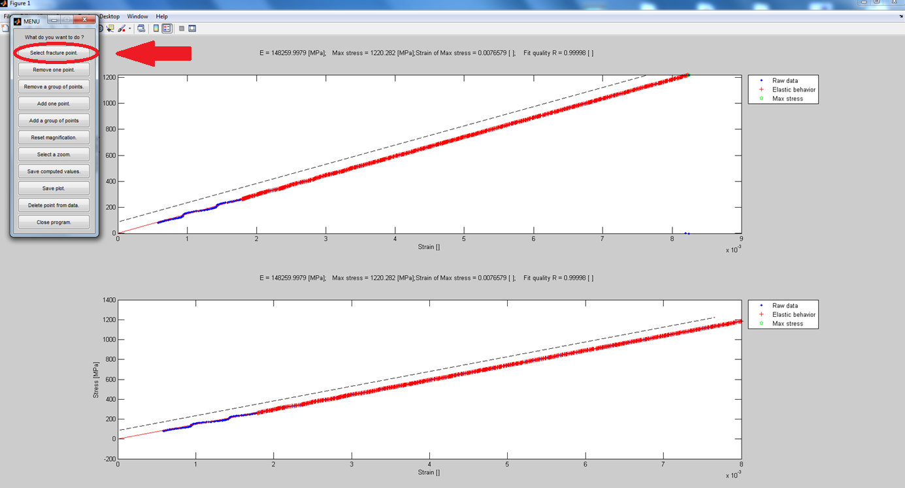
The material properties should be saved by 'Save computed values'. They are stored in 'Computed_data.dat'. The shown data results from a tensile test of a bulk metallic glass sample.
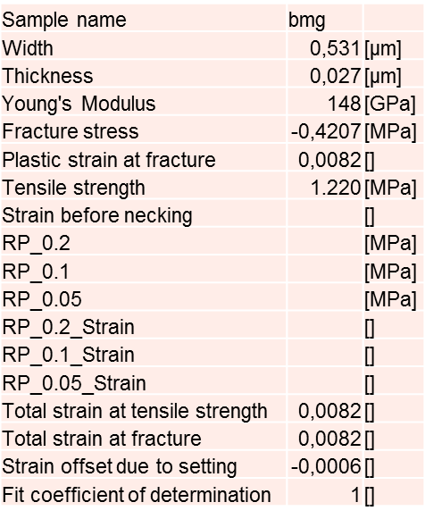
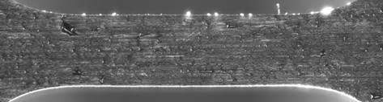
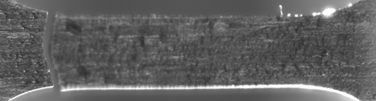